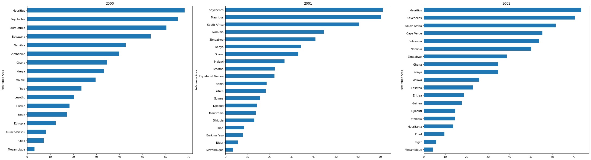
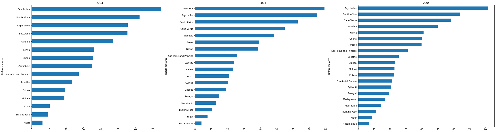
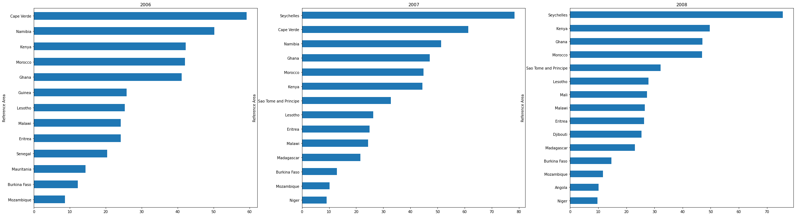
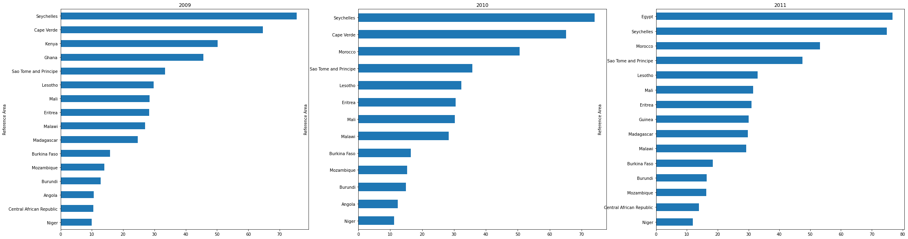
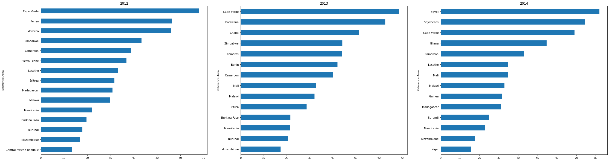
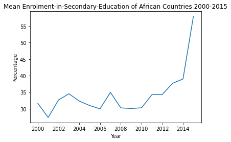
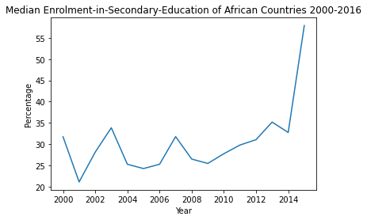
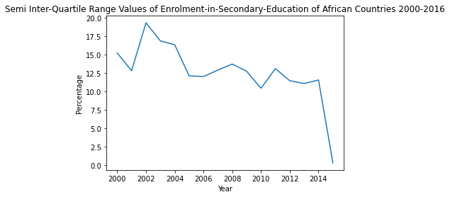
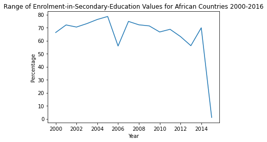

Bankole Oluwatobiloba 18CJ024113
NUMBER OF REPORTED MALARIA CASES BETWEEN 2009 AND 2019
The graphs below show the number of students enrolled for secondary education in all African countries from the year 2000 to
2015. This visualization is to show the trend Increase and decrease of secondary school enrollment within the aforementioned period





The line graphs below show the different measures of dispersion(as indicated by the legend), for the observation values in the bar plots above



